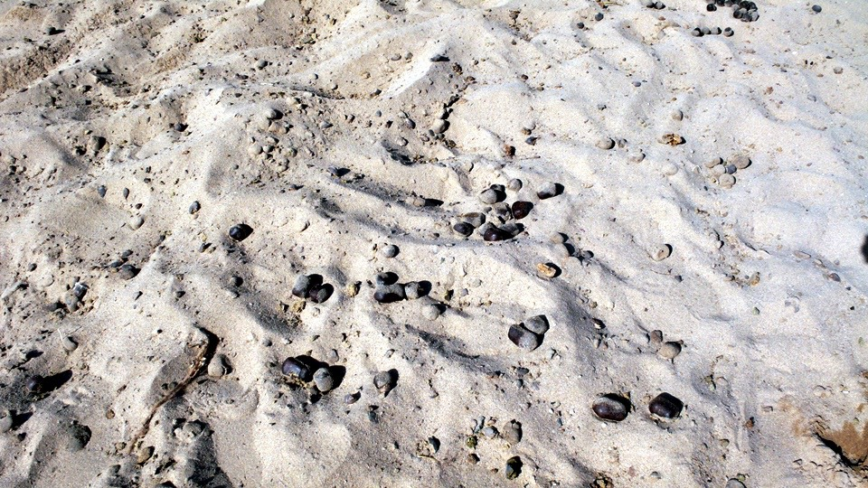
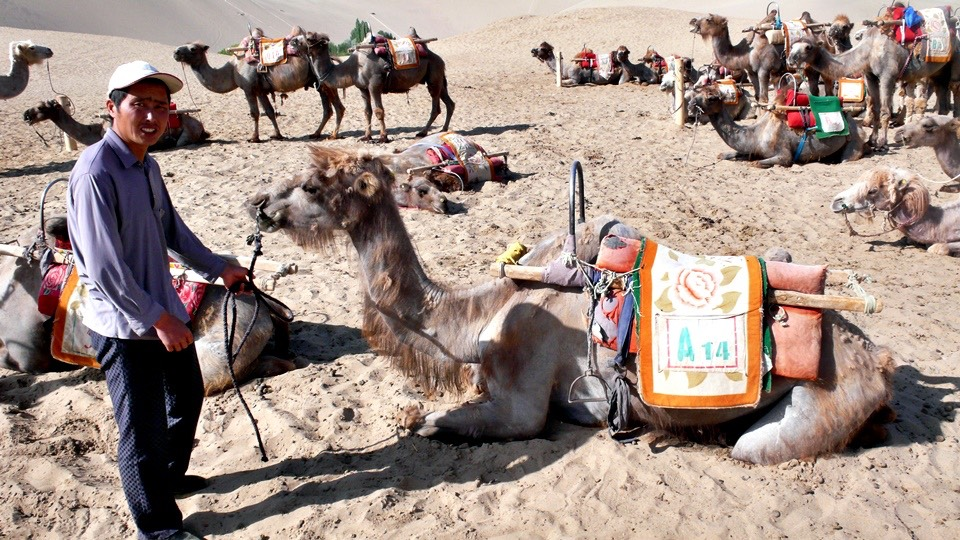
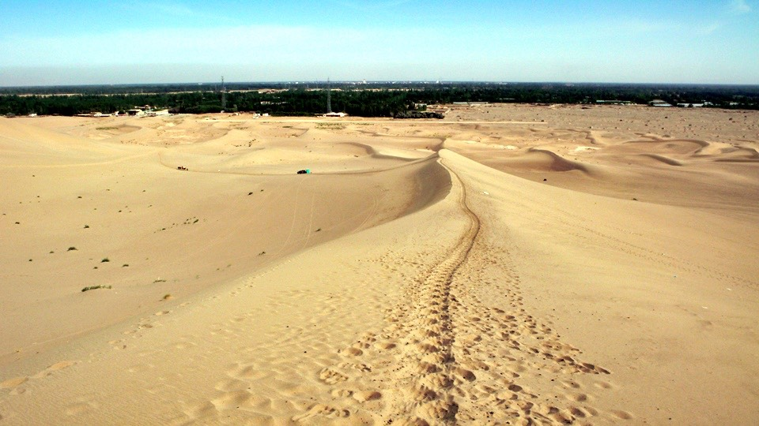
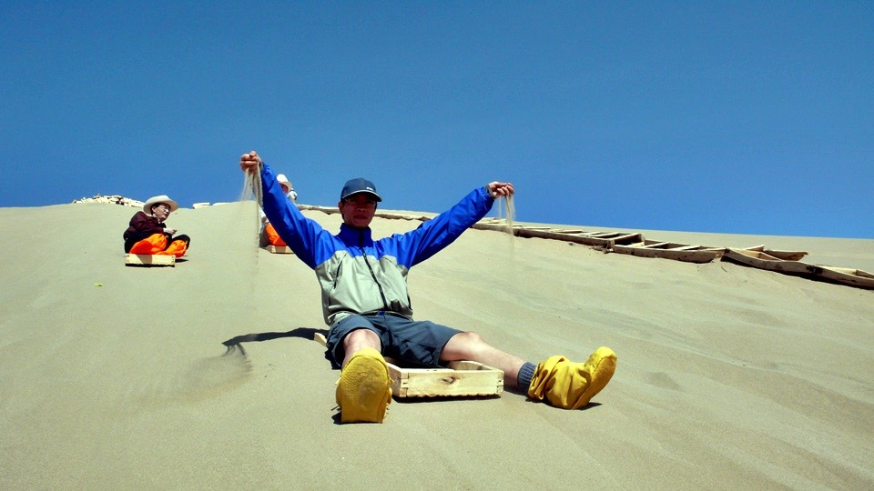
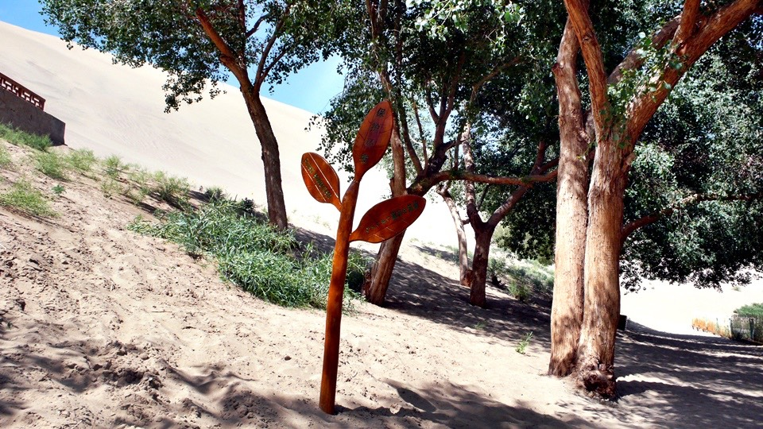

Whenever possible, I think it is best if I rest before 19h00.
The tiresome feeling still haunts me from my previous ride till midnight.
The long hours of riding into midnight not only is physically and mentally draining, it also reduces my recovery for the next coupe of days.
Today is my second day resting at Dunhuan, the second I opened my eyes I felt like a lead weight, could barely get myself off the bed.
This is the price you pay for over riding. But I guess it is training in itself.
Perhaps on my next night ride my body wouldn’t react this severely.
First mean of the day starts with beef noodle! I said to myself I wasn’t going to eat beef noodles unless I absolutely have to,
but the Lanzhou beef noodle is just to fine to pass on.
Have a great schedule planned for today. Off to Mt. Mingsa (screaming sand) for a camel ride
then to the famous Crescent Spring (a half moon shaped spring).
Since my hostel is well located, I just need to walk to the bus stop and catch a bus on Route 3, three minutes of walk.
The fare is cheap as well, 1RMB. Since Mt. Mingsa is closer to the city unlike Mogao Caves which is about 25km away.
The trip is only about 10 minute. Before we arrive, you could see the sand hill in the horizon.
I have been riding forever looking for my dream desert and now it just appears.

Since Crescent Spring is in Mt. Mingsa, you are only required a ticket for both.
And since this is not the tourist season, it’s will cost you 70 RMB. 100 RMB if it’s the tourist season.
After you pass the gate you are literally walking into the desert and the first thing to greet you is the heat wave.
Sand hills one after another. This is the real desert!
Unfortunately, ticket is just the start of your expenses here.
Now that you have paid your fee, how are you to enjoy the desert?

Two choices, 1. Quad bike.
2. Ride the camel.
And sorry, but no, you are not allowed to walk. That’s it.
I guess since you are already here, you might as well spend and enjoy yourselves.
Camel rides have set routes and the price is set. You ride from the gate to Mr. Mingsa,
then to Crescent Spring and back to the gate, 60 RMB.
This thing on the floor, camel dung. Not ok, camel dung. It smells like grass though.

Anyway, after I paid the ride fee, I am being called over to put on a shoe cover (to block out the sand).
They complained my feet are just too big; need to use a foreigner’s size.
After they carefully put on the shoe cover and tie up the laces and
I was really surprised by the service, the attendant now tells me this is an extra, another 10 RMB. Seriously?!!!
Only after you put the cover on then you tell me? Seriously?!!!
Now I am annoyed. This is not about money, but this is down right cheating. This is unethical by any business standard.
Anyway, after you put on the cover you are ready to ride.
Don’t worry if you don’t know how to ride, there’s a guide leading the camel for you.
My guide’s name is Ning Sutai, from Qinghai.
He works as a guide during tourist seasons and stays at home with his children in off seasons.

I like Sutai, nice chap. When you travel on your own,
anyone who keeps me company and chat is always a thing to treasure.
Generally they take out a whole tour group, camels are tied together,
you will see a small group of 5 ~6 camels of a bigger group of 10 ~ 20 camels.
Reminds me of the camel caravan that crossed the desert in the old days.
Camels shades off their firs once a year and right now, it’s shading time. All the camels looks as if they have skin diseases.
The camel is seated for you to climb on, hook into the stirrups and you hang tight onto the handle.
Still, every time the camel stands or sits, I always feel I am being thrown off.
The camel strolls onto the path with Sutai walking ahead.
This is a crappy job. In this heat Sutai has to walk the camel over the sand hills and I am his only customer.
Really, this isn’t easy. His monthly wage is only 300 RMB and he has to work all week.
The day starts at 05h00 (some customers are here to watch the sun rise) and ends only at 22h00 (sopme watches the sun set).
That’s a whopping 17 hours!!! Basically 10 RMB a day!!!
Without doubt, he survives by tips. Whilst strolling on top of the camel,
I went through my wallet to see what can I do for him. Grabbed 10 RMB for him first, before I have to spend on more “extras”.
10 RMB is really nothing. The ride is about 2 hours. Presume it’s tourist season and you have a full booking,you will do about 8 trips.
Apparently the tourists from Japan are the most generous, they tip by the hundreds.
But there are tourists who don’t bother to tip. They believe it is a service offered.
Luckily I am here on a Monday, not much tourists is here which is great.
Mt. Mingsa has a camel flock of about a thousand.
That’s a massive amount apparently during peak seasons you need more than a thousand camels just to cope.

Sutai called to me to loosen the grip on the handle and relax since I am wobbling all over the saddle.
Hey man, I am worried I would wobble off the camel, why do you think I am holding so tight.
Anyway, took his advise and hey, bouncing along with the camel’s steps,
way better, thanks! When I started I felt like a wannabe cowboy riding a bull machine,
waiting to see how long I can stay on.
Now I can balance and sit comfortably on my camel without holding the handle.
After we climbed a few sand dunes and strolled along the spines of a hill, we have arrived at Mt. Mingsa.
You can sand surf here. However, you had to climb up a steep hill first on your own two feet and it isn’t easy.
The sand is soft and you sink with every step. Very difficult to step off it.
What they did is they laddered the hill so you could climb up easier.
Easier my foot, the climb is about 30 storey, I am breathing like a camel now.
When you eventually reach the top you will stacks of bamboo made box like “sand surfing boards”.
They charge you another 10 RMB for sand surfing. Since I already paid before the climb, I just need to show them my ticket.
The way down is rather steep, kept on reminding myself that I can’t scream, have to contain myself, need to act like a man.
And I worried for nothing, because the “box” barely moved! You had to literally dig in and push
as if you were paddling to move forward about 50cm and repeat. This is what I get for climbing this hill?!!!

Why would I need to paddle so hard to sand surf? Shouldn’t it be like “argh………………” and I get to the bottom of the hill?
The sand is so hot being under the sun all day and all of a sudden I felt
as if I am practicing an ancient Kung Fu technique where you continuously dig your hands into the a wok of burning sand.
Thought I had it hard pushing myself all the ay down to the bottom and realized that the care taker on the bottom of the hill
when enough “boxes” are stacked, he had to carry them all the way to the top! Now that’s a hard job!
Finally I am back at the entrance of the sand surfing where Sutai is playing cards with other attendants whilst waiting for me.
I guess I will wait for him and rest a bit. The shoe cover looked to do its job,
but perhaps I worked too hard, sand get in my shoes anyway. Sand in my socks too. Sand everywhere.
If I knew this was going to happen I wouldn’t have bothered to rent this useless junk.
Rather that I tip Sutai. He has a kid in primary school in Qinghai and his parent is taking care of his son.
Sutai and his wife are all at Dunhuan working in the peak season. The family only gets together during winter.
“Qinghai must be pretty, I want to visit sometime”. On my next trip,
I am bringing Misasa with and we will visit Qinghai & Tibet.
Those are the two have to visit place for me in my live. I need to leave my footprint & memories there.
When I got here it was in the morning and it is already hot.
The afternoon will only get worse. I am tempted to visit the stalls selling cool drinks,
but the price triples to the price on the street is really bugging me.
Solution, “Sutai, would it be cheaper if you buy from the stalls?
If it is, wanna get us two cool drinks?”. If I buy it, it will cost me 6 RMB for one.
Sutai only paid 4 RMB for two. Tourists are meant to be ripped? Anyway, we are enjoying our cool drinks.
From the sand paddling Mt. Mingsa back to the gate and then turn toward the Crescent Spring.
The Spring is a natural wonder. A half moon shaped spring in the middle of a desert.
It is breathtakingly beautiful and wonderous.
As expected, when it was discovered, it was abused to literally non-existent.
Only during the 80’s did they begin to maintain and rebuild the area. Technically,
the Spring we see today are not what it really were.
The Spring isn’t very big, the water is also shallow as if it would be dry in a couple of days.
But it is man maintained so it wouldn’t happen.
The site dug another man made spring to continuously supply water to the original spring
so the Crescent Spring can be here for our next generations to see.
The spring is surrounded with a vegetation the locals call it “seven star”.
Apparently it offers the same quality as the “little blue pill”. The locals also claimed a type of fish lives in it, they call it the “iron backs”.
Apparently it cures all sorts of diseases. Perhaps this is why the Crescent Spring almost disappears form the face of the earth.
Walked around the spring (it is now secured by a fence) and noticed there are actually fishes swimming.
Is this introduced or did it survived from time? Amazing.
The sand at Mt. Mingsa are fine and a light brownish color.
The sand here by the spring is larger, crystal like and reflects the sunlight.
The locals called it “five coloured sand”.
The entrance is clearly marked with a “no container allowed” sign. For obvious reasons.
But tourists still took as much as they could with emptied cold drink bottles,
plastic bags and anything they can use. You would think the tourists could clean the desert out.
The dunes surrounding the spring are so huge it is amazing that they have not covered the springs by now.
Using myself as a guideline, how huge are these dunes?
I asked Sutai to take this photo, but he continuously waved at me whilst I am trying to do the “Da Vinci man spread”
so I had to run back and check on him.
“you ran too far and I can barely see you.”,
“don’t worry, I am more interested in the desert, I am just a guide rule in the photo.”.
I then ran back 200m into the sand again.
There are quite a few vegetations surrounding the spring, all grown out of the sand.
The book in the picture tells you the history of this particular tree.
Some are flowers, really amazing considering the environment they survive in.
A cute branch like sign reminding us to protect the environment.

Walking around the spring and appreciate its stunning view in all angles,
I am really happy I am here without tourists. Photos with true views of the spring and not with people in it.
We left the spring and strolled back to the gate on the camel around 12h00.
Lunchtime. I asked Sutai if he drinks and invited him to lunch for a cold one.
He suggested “donkey meat on yellow noodles” for lunch so off we went.
Enjoying my beer, I am really grateful for his services this morning.
10 RMB tip, a can of cold drink, a cold beer and a noodle dish.
My simple gestures to thank him and my endless appreciation for my friend form Qinghai.
Sutai had to get back to work after lunch and we bid farewell, I wondered would I see him again.
Rested a little and stroll through the museum, no extra fees needed.
Initially I thought the museum is just there for more trinket stalls, but I was wrong.
This actually is a proper museum, which portrays the life of a wealthy family in ancient times.
From the bedroom, atrium, kitchen and the study, it is all well kept.
There is also a history of Dunhuan.
I didn’t realize Dunhuan was sealed from China for 200 years from ancient times
when the emperor at the time closed Jiayuguan (a gate at the end of the Great Wall).
For 200 years Dunhuan has been on its own. Since it is situated afar,
in terms of cultural and developments they are still different from China. But Dunhuan today is no longer a small abandoned town.
Looking at the excellent portraits of the famous people in the histories of Dunhuan and reading their deeds,
it vividly brought them back to live.
After I browsed through the museum, my tour today ends and I went back to the bus waiting for it to depart.
The driver however, kept himself busy trying to pick fruits of a tree by whacking it with a stick.
I went to check him out and noticed the dandelion seeds are ready to fly.
The driver finally finished his farm work and came back to the bus.
“apricot, try one?”, “of course!”.
Took a bite into the still green apricot and it is rather sour but very tasty.
Today is my second day at Dunhuan, that haunting, tiring feeling finally disappeared in the afternoon.
Did a quick count, I spent more than 500 RMB just two days in Dunhuan.
This is usually what I spend in about two weeks.
This is crazy, but I have tried to control it as well as I could.
Worried I won’t have enough cash for the coming journey,
I went to the cash machines to draw some cash, but the machine just would not accept my card.
To prevent carrying cash on my journey,
I specifically activated my facility to allow me to draw cash internationally and
that I can exchange on the day’s exchange rate. But if the cash machine don’t accept the card, this facility is useless.
I really need the cash as I am running out. I need a bank that offers international facilities.
China has many banks, no less than Taiwan so I am trying a Bank of China. Sounds like it is a state owned Bank just like Bank of Taiwan.
Tried their cash machine and chose Chinese menu, didn’t work.
Tried again with English menu, the reddish RMB rolled out, excellent.
I have no idea why a bank would have a weigh in it.
But since it is there, I guess I will check my weight out. I have been traveling for about a month,
been eating gourmet meals but I haven’t put on any weight. The 100 plus kilometers of ride are taking care of the calories.
Went to a rather noisy Dunhuan Night Market for dinner.
Found a local cuisine where they hand roll doles almost like a fish shape and stir fry it with eggplant and asparagus.
It is rather spicy, but not bad. The dole is small and slippery, spoon is a better option with this dish.
I found barbecue corn on the side of the street. It’s sticky type of corn form the North East of China,
they boil it first before they barbecue it. The corn is soft by nature,
they barbecue it without any sauces so you get to taste the natural sweetness of the corn. 3 RMB for one.
Since I am ahead of the schedule by two days (I planned to only arrive at Dunhuan today),
I can take it easy. Told the manager at the hostel that I am staying another day,
I have not finished with Dunhuan yet!